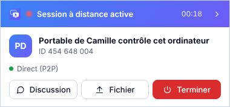
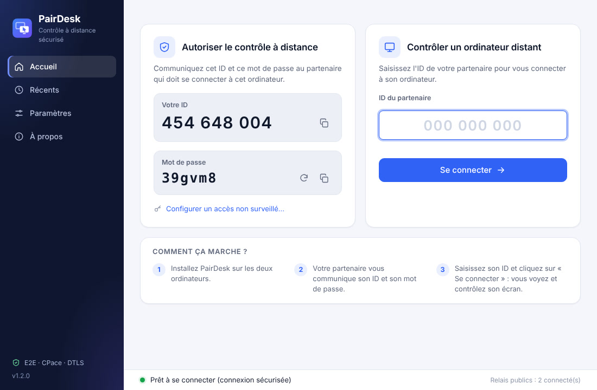
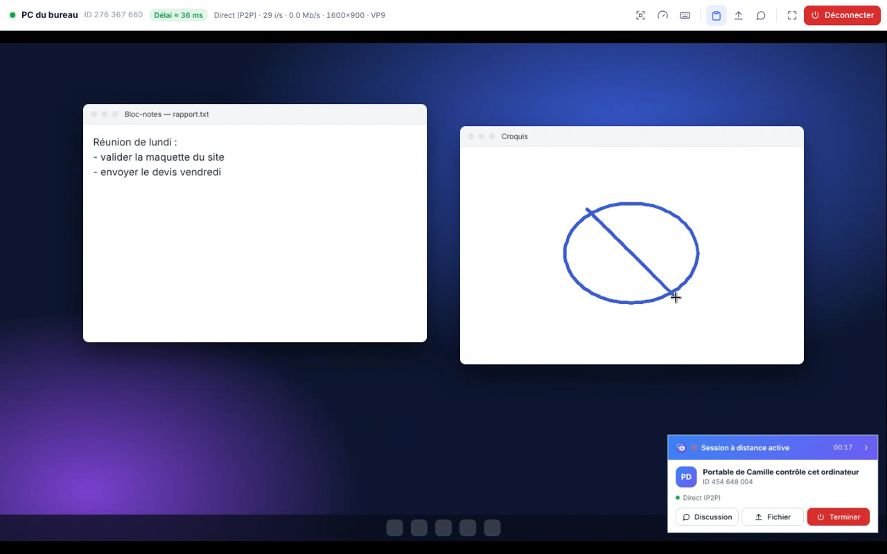

Fluide comme en local
Image en 30 images par seconde et connexion directe entre les deux PC dès que possible : la souris suit votre main, sans décalage gênant.
● Direct (P2P)30 i/sVP9Délai ≈ 30 ms
PairDesk vous connecte à l'écran d'un autre ordinateur pour aider un proche, dépanner un collègue ou retrouver vos fichiers. Un ID, un mot de passe, et c'est parti.
Pas de configuration réseau, pas de port à ouvrir : PairDesk trouve le chemin tout seul.
Sur votre ordinateur et sur celui de votre partenaire. L'installation prend moins d'une minute.
Votre partenaire vous lit l'ID affiché sur son écran, par exemple 454 648 004, et son mot de passe temporaire.
Saisissez l'ID, cliquez sur « Se connecter » : vous voyez son écran et utilisez sa souris et son clavier.
La connexion, en temps réel.
Comme si vous étiez assis devant l'autre ordinateur, sans les complications.
Image en 30 images par seconde et connexion directe entre les deux PC dès que possible : la souris suit votre main, sans décalage gênant.
Texte, mise en forme, images et même fichiers : copiez sur un ordinateur, collez sur l'autre, avec les raccourcis habituels.
Faites glisser un fichier sur l'écran distant : il arrive exactement là où vous l'avez lâché, dans le bon dossier.
Échangez des messages pendant la session, sans téléphone ni autre application.
Passez d'un écran à l'autre de l'ordinateur distant en un clic.
Pendant une session, un panneau reste visible sur l'ordinateur contrôlé : on voit qui est connecté, on discute, on envoie un fichier, et on coupe tout d'un clic.

Avec l'application mobile, la caméra de votre téléphone s'affiche sur le PC et apparaît comme webcam « PairDesk Camera » dans vos logiciels de visio (Windows).
Définissez un mot de passe personnel pour vous connecter à votre propre PC, même quand personne n'est devant.
Une interface claire, en français, pensée pour les personnes qui ne sont pas à l'aise avec l'informatique.
PairDesk se met à jour tout seul : vous avez toujours la dernière version.
Personne d'autre que vous et votre partenaire ne peut voir la session, pas même nous.
Image, clavier, fichiers et messages passent par un canal chiffré (DTLS) établi directement entre les deux ordinateurs.
Le mot de passe est vérifié par un échange cryptographique (CPace) : il ne circule jamais sur le réseau, même chiffré.
Un nouveau mot de passe à chaque démarrage, renouvelable d'un clic. Un ID seul ne suffit jamais pour entrer.
Dès que le réseau le permet, les deux PC se parlent en pair à pair, sans serveur intermédiaire pour les données.
Pas d'inscription, pas d'e-mail, pas de publicité. Rien à revendre, rien à fuiter.
Le code source est public sur GitHub : chacun peut vérifier ce que fait l'application.


Pas de version d'essai, pas de fonctions bloquées, pas de carte bancaire. Version 1.2.0.
Toutes les versions et l'historique des changements sont sur GitHub.
Oui. Toutes les fonctions sont disponibles gratuitement, sans limite de durée ni de nombre de connexions, pour un usage personnel comme professionnel.
Oui : celui qui aide et celui qui est aidé installent PairDesk. Il n'y a rien d'autre à configurer, ni compte à créer, ni port à ouvrir sur la box.
Non. Il faut votre ID et votre mot de passe, qui change à chaque démarrage. Pendant toute la session, un panneau reste affiché sur votre écran avec le nom de la personne connectée et un bouton « Terminer ». Vous pouvez aussi désactiver complètement les connexions entrantes.
Oui, un PC sous Windows peut contrôler un PC sous Linux et inversement. La version Android arrive bientôt.
Aucun problème : PairDesk fonctionne à travers Internet, d'une maison à l'autre, du bureau au domicile, en Wi-Fi comme en 4G. Il choisit automatiquement le chemin le plus rapide.
Oui, avec l'accès non surveillé : définissez un mot de passe personnel dans PairDesk, et connectez-vous à votre ordinateur depuis n'importe où.
Téléchargez PairDesk et connectez-vous à votre premier ordinateur dans moins de deux minutes.